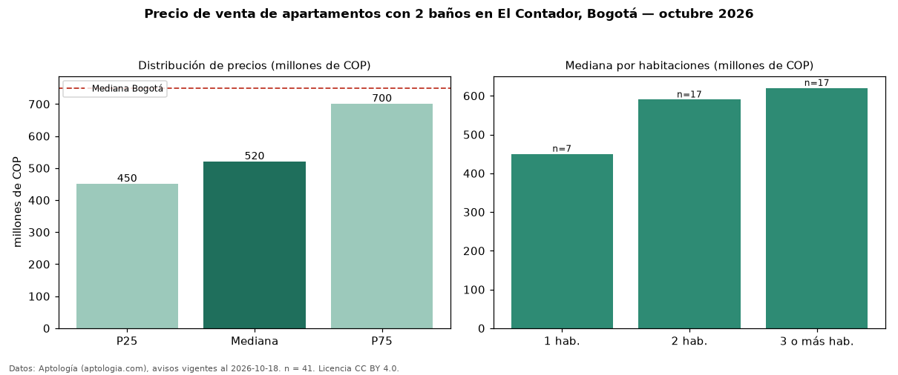

Precio de venta de apartamentos con 2 baños en El Contador, Bogotá — octubre 2026
En El Contador (localidad de Usaquén), Bogotá, la mediana de precio de venta de apartamentos con 2 baños es COP 520 millones, según 41 avisos vigentes. Eso es 22 % menos que la mediana de todos los apartamentos en venta de El Contador (COP 670 millones, n = 95); este segmento reúne el 43 % de esos avisos. Por metro cuadrado, la mediana es COP 7,01 millones/m² (n = 41), 5 % por encima del conjunto de referencia (COP 6,70 millones/m²). El área mediana anunciada es 77 m². El segmento con más oferta es el de 2 habitaciones (17 avisos, mediana COP 590 millones); pasar de 1 habitación a 3 o más habitaciones cambia la mediana +38 %. La administración mediana declarada es COP 634.000 al mes (n = 36). El estrato más frecuente es 5 (85 % de los avisos con estrato). La mediana de todos los apartamentos en venta de Bogotá es COP 750 millones (−31 % de diferencia). Datos: Aptología (aptologia.com), CC BY 4.0 — https://www.aptologia.com/venta/bogota/el-contador. Archivos: PDF, CSV con las cifras y gráfica PNG.

| Avisos únicos | 41 |
|---|---|
| Percentil 25 | COP 450.000.000 |
| Mediana | COP 519.750.000 |
| Percentil 75 | COP 700.000.000 |
| Mediana por m² | COP 7.014.925 |
Fuente: avisos vigentes de portales inmobiliarios recopilados por Aptología, deduplicados (mínimo 30 avisos únicos por celda). Precios pedidos, no cerrados. Fecha: 2026-10-18.